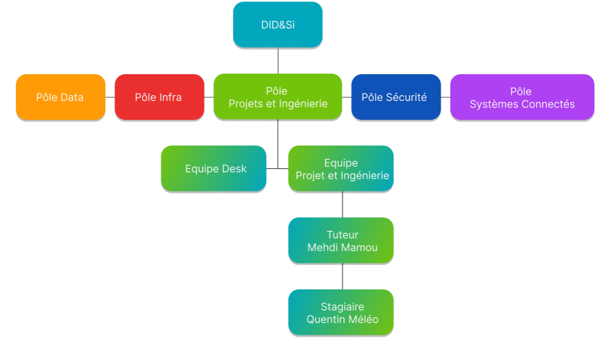
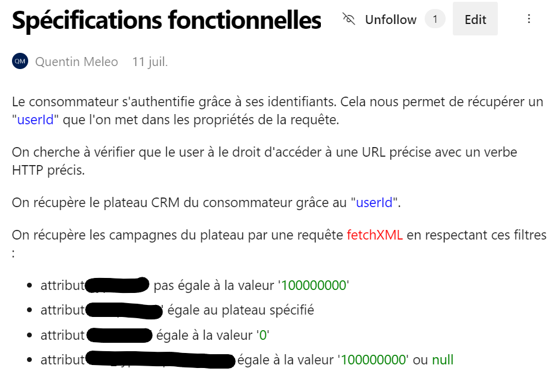
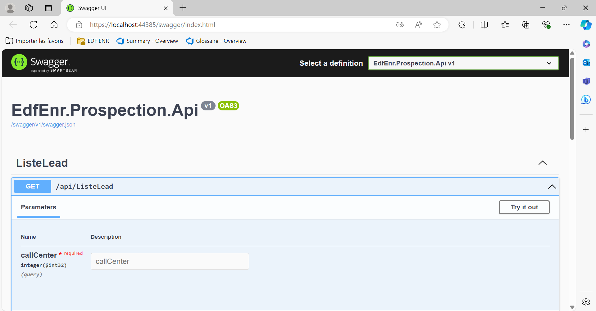
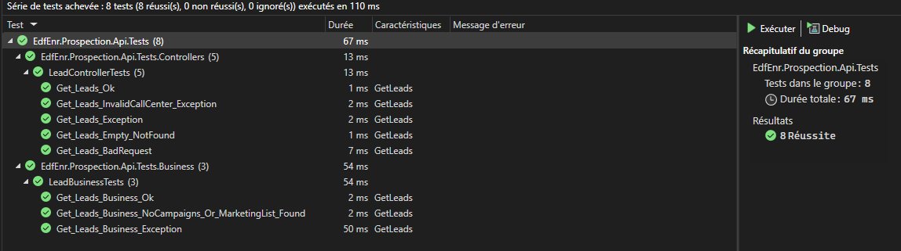

Mon Stage chez EDF ENR
Mon intégration au sein de l'équipe
Lors de ma première journée au bureau, j’ai été accueilli chaleureusement par l’équipe de la DSI. Nous avons partagé un café et les chouquettes que j’avais apportées ont eu leur petit effet. Mon tuteur, Mehdi Mamou, m'a présenté une partie de la DSI au rez-de-chaussée, où se trouve le desk, la partie projet infra et service connecté. C'est notamment là où j'ai récupéré mes affaires de travail : carte de bureau, ordinateur portable, clavier, souris et casque sans fil.
Les bureaux sont organisés sous la forme de flex-office, donc personne n'a de place attitrée et on se mettait avec les autres membres de notre service et souvent au même endroit. On m'a ensuite donné un kit de bienvenue, où se trouvait une lettre signer par le directeur, une tasse, une gourde, un set de couverts et un pot de miel.
Puis on m'a expliqué comment est organisée la DID&Si, avec mon tuteur qui se trouve dans l'équipe Projet et Ingénierie, et donc moi aussi par extension. :
| Pole |
Equipes |
| Pole Data |
| Pole Infra |
| Pole Systèmes Connectés |
| Pole Sécurité |
| Pole projets et Ingénierie |
Equipe Desk / Equipe Projet et Ingénierie |
Voici un schéma pour que ce soit plus lisible :

On m'a ensuite présenté l'autre partie des membres de la DSI et expliqué leurs rôles respectifs, à savoir Mehdi et Joris en tant que développeur middleware, Patrick en tant que DevOps, Paul en tant que chef de projet Autocad, Florent, Dakae et Youssef en tant que techniciens MCO, Nedjma en tant que chef de projet et assistante d'Idriss, qui est responsable du pôle projets et ingénierie.
J'ai eu une présentation du service cybersécurité avec le responsable de la sécurité SI sur les membres de son service et les bonnes pratiques à avoir.
Les premiers jours ont été consacrés à la prise en main des outils en m'autoformant sur du .NET et des processus internes. Dès le deuxième jour, j’ai été intégré aux réunions d’équipes du Daily, une réunion journalière des développeurs de la DSI et des réunions hebdomadaires de la DSI ce qui m’a permis de comprendre les projets en cours et de m’impliquer activement. Tous les jours, le matin et l'après-midi, on fait une réunion avec mon tuteur et Joris sur mes réalisations et mes difficultés rencontrées pour faire le point sur mon travail et obtenir des conseils ou des solutions pour surmonter les obstacles.
Les difficultés et solutions
Comme tout stage, j’ai rencontré quelques défis. L’un des principaux obstacles a été la compréhension des systèmes existants et de leur architecture complexe. Pour surmonter cela, j’ai passé du temps à lire la documentation et à poser des questions à mon tuteur et aux autres membres de l’équipe, notamment Joris et Patrick. Aussi les premiers jours je n'avais pas d'accès admin ce qui m'empêchait de télécharger des fonctionnalités nécessaires comme Visual Studio 2022 et .NET. Pour résoudre ce problème, j'ai demandé à obtenir des droits d’administrateur ce qui m'a permis d’installer les fonctionnalités nécessaires sans entrave. Une autre difficulté a été la gestion du temps entre les tâches assignées et l’apprentissage de nouvelles technologies. J’ai appris à prioriser mes tâches et à utiliser des outils de gestion de projet pour mieux organiser mon travail.
Aspects techniques
Le stage a principalement porté sur le développement d’APIs en C# .NET pour des applications middleware. J’ai travaillé avec ASP.NET Core pour créer une nouvelle API en reprenant une ancienne API qui n'était plus à jour. L’intégration continue et le déploiement (CI/CD) ont été réalisés avec Azure DevOps, ce qui m’a permis de comprendre l’importance de l’automatisation dans le cycle de développement.
Après m'être autoformé, j'ai commencé par faire du rétro engineering sur une ancienne API web service pour mettre en place une documentation dessus sur le wiki de l'entreprise et pour la création de la nouvelle API web service.

Ensuite j'ai analysé les avantages/désavantages des solutions Microsoft Azure Fonctions et App Service par rapport aux besoins de l'entreprise dans un fichier Excel.
Si vous souhaitez accéder à mon fichier Excel, vous pouvez le télécharger ici.
Puis j'ai commencé la création de la nouvelle API en m'aidant des autres API existantes et du wiki sur le rétro engineering de l'ancienne API web service. J'ai configuré une couche controller pour pouvoir gérer les requêtes HTTP tel que GET et une couche business pour pouvoir traiter les règles de gestion et fonctionnalités spécifiques qui vont être utilisée dans la couche controller.
J'ai ensuite configuré le programme de démarrage et implémenté la requête GET du controller dans le programme de démarrage.

Sur ce j'ai configuré une couche tests pour les tests unitaires ce qui permet de vérifier de manière isoler que chaque morceau de code fonctionne correctement.

Finalement j'ai listé les tests d'intégration dans un fichier Excel pour vérifier que les différentes parties d’un système fonctionnent correctement ensemble.
Compétences développées
Ce stage m’a permis de développer plusieurs compétences techniques et non techniques :
Techniques : Maîtrise de C# et ASP.NET Core, langage de récupération de données avec FetchXML, maitrise des tests unitaires avec MSTest, gestion des API avec Bruno.
Non techniques : Travail en équipe, gestion du temps, résolution de problèmes, communication efficace.
Actualité professionnelle
Durant mon stage, j’ai eu l’opportunité de participer à des conférences et des webinaires, notamment une sur l'utilisation de l'IA Copilot de Microsoft. J’ai également suivi des formations en ligne pour approfondir mes connaissances en C# et .NET. Ces activités m’ont permis de rester à jour avec les évolutions technologiques et de comprendre les meilleures pratiques du secteur.
Bilan de Stage
Ce stage m’a permis de découvrir un environnement de travail enrichissant. Les échanges avec mes collègues ont été très précieux et m’ont permis de développer une meilleure compréhension du métier de développeur en entreprise, de la programmation et des projets sur lesquels nous avons travaillé.
J’ai eu l’opportunité de travailler sur des projets de développement d’API en C# avec .NET, ce qui m’a permis de renforcer mes compétences en analyse, en développement et en résolution de problèmes. J’ai également appris à utiliser de nouveaux outils et technologies, ce qui a élargi mon champ de compétences techniques.
Ce stage m’a également permis d’identifier des domaines dans lesquels je peux encore progresser. Par exemple, j’ai réalisé l’importance de la gestion du temps et de la priorisation des tâches pour être plus efficace. De plus, j’ai pris conscience de la nécessité de continuer à développer mes compétences en programmation et de débogage, en particulier l’utilisation des outils de débogage.
Cette expérience m’a non seulement permis de grandir professionnellement, mais aussi personnellement. Je suis convaincu que les compétences et les connaissances acquises durant ce stage me seront extrêmement bénéfiques pour mon développement futur.
En conclusion, ce stage a été une expérience extrêmement enrichissante. J’ai non seulement acquis des compétences techniques précieuses, mais j’ai également appris à m’intégrer dans une équipe professionnelle et à gérer des projets complexes. Je suis reconnaissant pour l’opportunité et je suis convaincu que cette expérience me sera bénéfique pour ma future carrière.